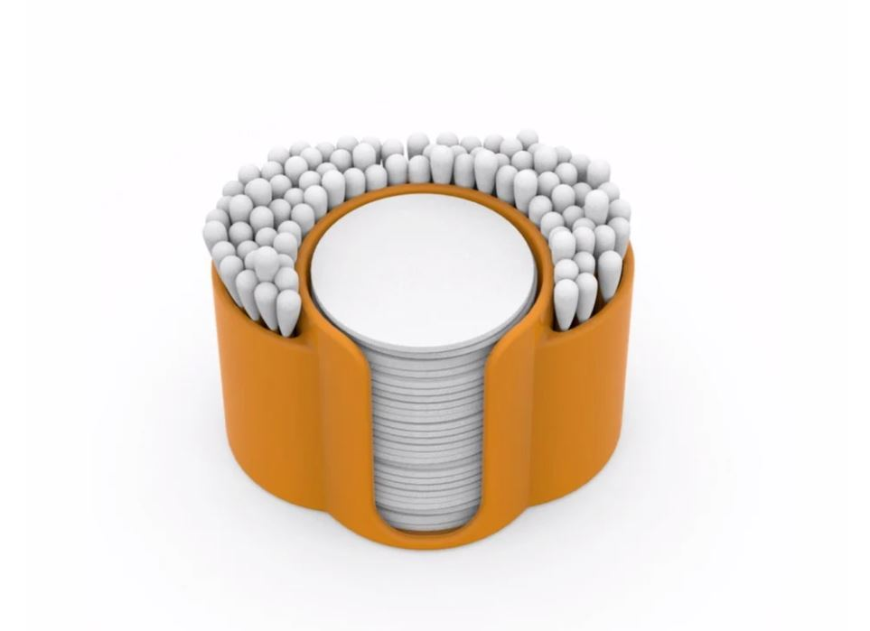
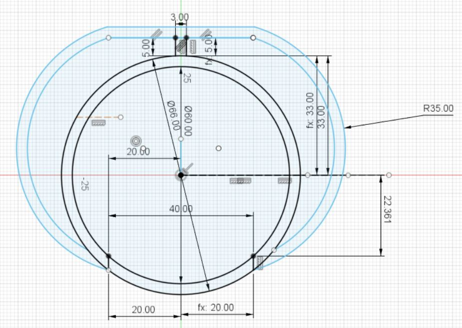
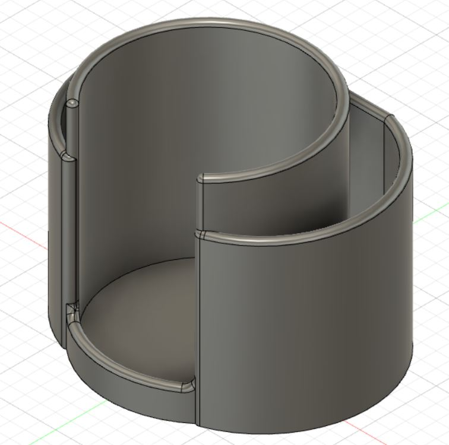
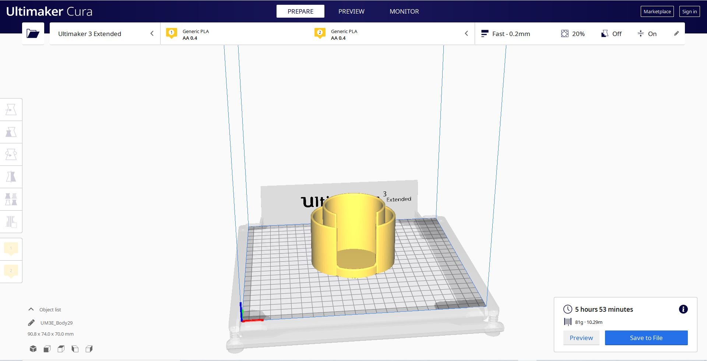
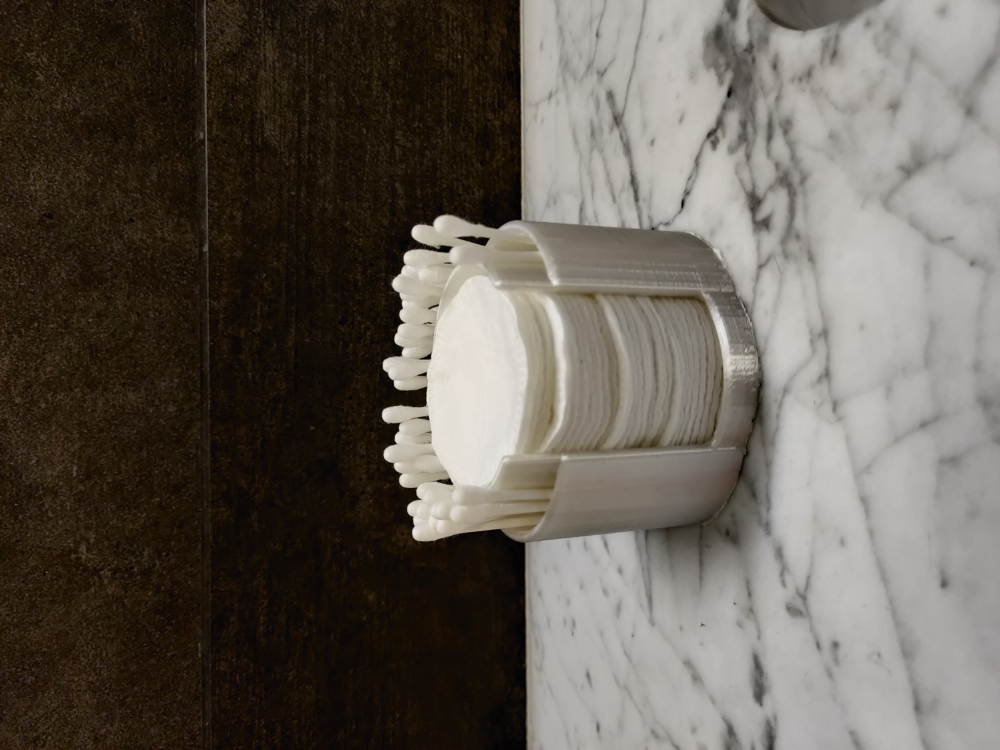
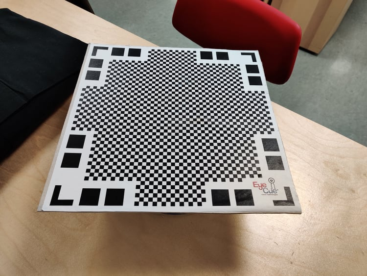

Verkefni 3 - 3D prentun og 3D skönnun

Eftirfarandi verkefni var þrískipt, tvö einstaklingsverkefni, 3D prentun og 3D skönnun og síðan eitt hópaverkefni sem var prófun fyrir 3D prentun. Í 3D prentunar verkefninu átti að hanna og teikna módel fyrir 3D prentun skilyrði fyrir hlutinn var að ekki væri hægt að framleiða hann með frádráttaraðferð og að hluturinn væri ekki úr meira en 100g af efni. Í 3D skönnunar verkefninu átti maður að velja sér einhvern hlut og 3D skanna hann. Í hópaverkefninu átti að velja 3D prentara og prenta út hlut og úr því ákvarða hönnunarþvinganir fyrir hlutinn sem að átti að teikna í einstaklingsverkefninu.
3D prentun
Undirbúningur
Þegar að ég hófst við það að ákvarða hlut til þess að teikna vildi ég hafa hlutinn nothæfan, litlan og einfaldan í hönnun. Hafist var við það að skoða ýmis Youtube myndbönd og skoða vefsíður sem að fjallaði um lítil og nothæf 3D prentunar verkefni. Eftir stutta leit fann ég verkefni á eftirfarandi vefsíðu all3dp.com. Þar var lítil hlutur sem að vakti áhuga minn en hann má sjá hér á mynd að neðan og einnig má nálgast hann á þessari vefslóð thingiverse.com/thing:4224358. Ég valdi þennann hlut því að mér fannst hann virka einfaldur í hönnun og einning datt mér í hug að konurnar á heimilinu myndu finnast hann kannski nothæfur að einhverju leiti. Í þessu verkefni var einnig notast við forritin Fusion360 til þess að teikna hlutinn og Cura til þess að prenta hann út.
Hönnun
Eftir að ég var búinn að ná í forritin þá gat ég hafist handa við að teikna hlutinn. En áður en ég gat gert það þá þurfti hópurinn að framkvæma test til þess að sjá t.d. hver veggþykktin gæti verið o.þ.h. en framkvæmd hópaverkefnis má nálgast hér en hópaverkefnið var unnið í samstarfi við Birtu Hákonardóttur og Elísu Ósk Jónsdóttur.
Ég vildi ekki bara taka hlutinn á Thingiverse og fá lengdirnar frá honum og herma eftir, ég vildi frekar hafa hann til hliðsjónar á meðan að ég teiknaði minn eigin hlut. Ég byrjaði að leita að stærðum bómullarskífu og eyrnapinna og var þvermál skífa iðulega rétt undir 60mm í þvermál og lengd eyrnapinna um 75 mm. Ég byrja á því að teikna hring með þvermál 60mm og geri svo annan hring 6 mm lengri í þvermál þannig að veggþykktin væri 3mm, ég valdi þá þykkt því ég vildi ekki hafa hlutinn örmjóann heldur hafa smá þykkt í honum. síðan framlengi ég frá ytri vegg hringsins um 5mm til að gera rúmið fyrir eyrnapinnanna, það var svo einfaldlega teiknað með arc skipuninni í Fusion og síðan speglað yfir, teikninguna af hlutnum má sjá hér að neðan.
Síðan var komið að því að nota skipunina "exstrude" til þess að mynda hlutinn. Ég valdi að hafa botninn 3mm að þykkt eins og vegg þykktina, ytri veggirnir fengu að vera 55mm að hæð sem var valin til þess að eyrnapinnarnir yrðu öruggir á sínum stað og innri veggurinn fyrir hnoðrana var 70mm að hæð, rétt undir lengd eyrnapinnanna. Lokamynd hlutarins í Fusion er hér að neðan.
Prentun
Þegar að ég var orðinn ánægður með hlutinn þá var næst á dagskrá að velja 3D prentara og framkvæma prófun á honum, en það var einmitt hópverkefnis-hluti verkefnisins, verkefnið var framkvæmt með Elísu Ósk Jónsdóttur og Birtu Hákonardóttur en verkefnið má nálgast hér.
Eftir að prófunin var framkvæmd ákvað ég að breyta engu í módelinu og þá þurfti einungis að undirbúa teikninguna fyrir prentun, en til að geta gert það þá þurfti að færa módelið í hugbúnað fyrir 3D prentara. Þá þurfti að vista skránna sem STL skrá og það var gert með því að hægri smella á "body-ið" og velja "Save as STL".
Prentarinn sem varð fyrir valinu til að prenta út hlutinn var Ultimaker 3 prentari en það er sami prentari og var notaður fyrir prófunina í hópverkefninu. Því næst opnaði ég hlutinn minn í Ultimaker Cura og ég notaði sömu stillingar og í hópaverkefninu þá sá ég í Cura að hluturinn yrði 81g og um 6klst í prentun. Að neðan má sjá mynd af hlutnum í Cura
Þá var hægt að færa skránna á USB lykil sem að var tengdur beint í prentarann og síðan byrjaði hann að prenta.
Útkoma
Hluturinn kom bara vel út að mínu mati, bómullarskífurnar passa fullkomlega en ég hefði viljað meira pláss fyrir eyrnapinnana, en ég minnkaði það pláss vegna þyngdartakmarkanna, en þeir komast fyrir og líta vel út. Hluturinn situr núna við hliðina á vaskinum og fækkar stöðugt úr honum
3D skönnun
Í seinni hluta verkefni 3, átti að velja sér hlut til þess að 3D skanna. Ég valdi litla styttu af Big Blue Bear sem stendur í Denver myndir af honum heima hjá mér og í Denver má sjá hér að neðan
Þegar að ég mætti í Fablab til að prenta hlutinn minn í fyrra verkefninu fékk ég að vita af forritinu Qlone til að skanna hlutinn, en það er app sem maður helður niður í símann sinn og gerir mann kleift að 3D skanna hluti. En til þess að nota forritið þurfti svona köflótt borð eins og sjá má á myndinni hér að neðan
Borðið var á snúningsborði sem að auðveldaði við skönnunina. Til að skanna hlutinn byrjaði ég á því að staðsetja hlutinn sirka fyrir miðju borðsins. Síðan opnaði maður Qlone og þegar að maður beindi myndavélinni að borðinu þá birtist hjúpur utan um hlutinn. Þá valdi ýtti maður á upptökutakkan og snéri disknum og hallaði símanum ofar þar til að allar einingar hjúpsins voru horfnar. Þá var skönnuninni lokið. Eftir fyrstu skönnun var mælt með því að setja hlutinn á hliðina og framkvæmdi aðra skönnun á sama hátt og áður. Þá varð hluturinn skýrari á þeirri hlið sem að snéri upp. Útkoman úr skönnuninni er hér að neðan
Eins og sést hér þá kom vinstri hliðin út betur en sú hægri þar sem að björninn lá hægri hliðinni í seinni skönnuninni. En annars kom skönnunin vel út
Tímaskráning
Tímaskráning fyrir þetta verkefni má sjá í töflunni hér að neðan
Tímaskráning fyrir verkefni 3
| Velja verkefni | 1 klst |
| Teikna í Fusion | 2 klst |
| Prófun | 1 klst(+1 prentun) |
| Prentun | 1 klst(+6 prentun) |
| Vefsíðugerð | 5 klst |
| 10 klst (+7 prentun) |
Skrár
Fusion skrá fyrir þetta verkefni má nálgast hér